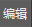

使用雕刻层可以对交互式梳理工具的效果进行融合与分层。例如，您可以为每个修饰笔刷创建雕刻层，然后调整这些层的权重，从而生成独特的修饰或多样的发型。也可以为某个层的权重值设置关键帧，从而创建简单的头发动画。
通过交互式修饰编辑器使用雕刻层
| 目标 | 操作 |
|---|---|
| 添加雕刻层 | 选择雕刻修改器，然后单击“添加雕刻层”(Add Sculpt Layer)。 |
| 编辑雕刻层 | 选择“雕刻”(Sculpt)修改器，然后单击要编辑的雕刻层右侧的  图标。
|
| 设置雕刻层的权重。 | 拖动其滑块可将权重（影响）设置为一个介于 0.000 和 1.000 之间的值，或者在“权重”(Weight)文本框中输入一个值。
设置为 0 时，表示雕刻层对修饰没有影响。设置为 1 时，表示 100% 影响。为获得最佳效果，请使用介于 0 和 1 之间的权重值。 在“权重”(Weight)文本框中，可以输入超出 0.000 ~ 1.000 范围的值，以反转（负值）或放大（超过 1 的值）层的影响。 如果输入的值大于当前最大值（默认值为 1），则最大值更改为该值的两倍，或者如果该值的两倍大于 10，则更改为 10。 如果输入的值小于当前最小值（默认值为 0），则最小值更改为该值的两倍，或者如果该值的两倍小于 -10，则更改为 -10。 如果输入的值小于 0 或大于 1.000，则权重滑块的长度将会更改，以反映新的值范围。 |
| 设置层权重值的关键帧。 | 从下列选项中选择：
|
| 移除关键帧 | 在时间滑块上选择关键帧，在雕刻层上单击鼠标右键，然后选择“移除关键帧”(Remove key)。 |
| 分组雕刻层 |
按住 Ctrl 键并单击要分组的层，然后选择以下方法之一：
若要解组雕刻层，请将其拖放到组外的位置。 |
|
合并雕刻层 合并的层将添加到名为 mergedLayer 的新雕刻层中。若要进行合并，雕刻层必须属于同一“雕刻”(Sculpt)修改器。 |
若要合并选定雕刻层，请执行以下操作：
若要仅合并已启用的层，请单击鼠标右键并在显示的菜单中选择“合并可见项”(Merge Visible)。 |
| 禁用雕刻层
临时禁用雕刻层将解除该层上的修饰工具笔刷笔划对修饰的影响。不会删除这些笔刷笔划。 |
单击雕刻层左侧的  。 。
单击 |
| 删除雕刻层
永久删除雕刻层会将其从描述中移除，并从头发中移除所有修饰工具笔刷笔划。 |
选择雕刻层，然后选择以下方法之一：
|
 图标指示该层处于编辑模式。您所创建的任何修饰工具笔刷笔划现已存储并由此雕刻层控制。每次只能进入一个雕刻层的
图标指示该层处于编辑模式。您所创建的任何修饰工具笔刷笔划现已存储并由此雕刻层控制。每次只能进入一个雕刻层的 。
。
 指示已在层上设置关键帧。
指示已在层上设置关键帧。
 图标。
图标。
 图标
图标